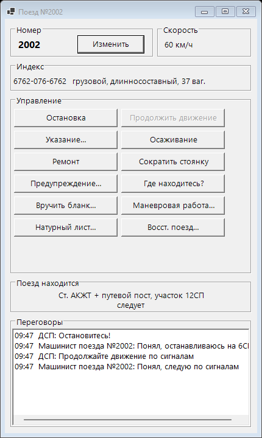
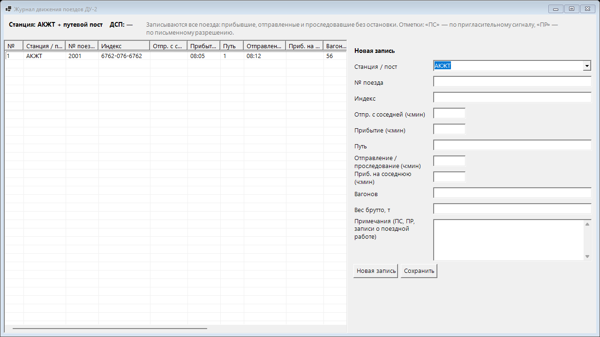
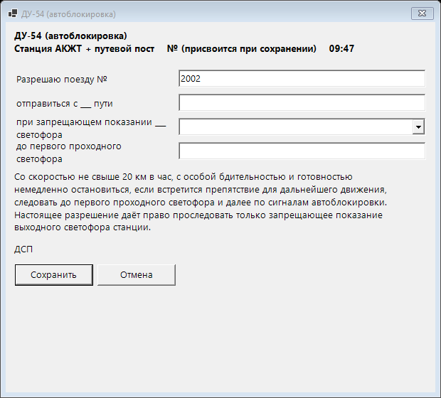
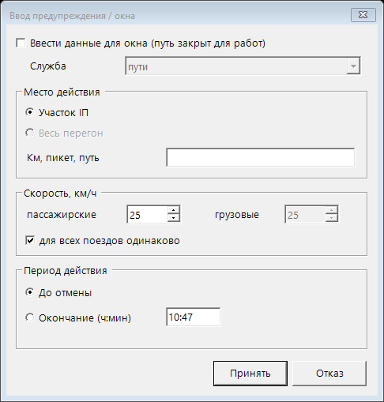
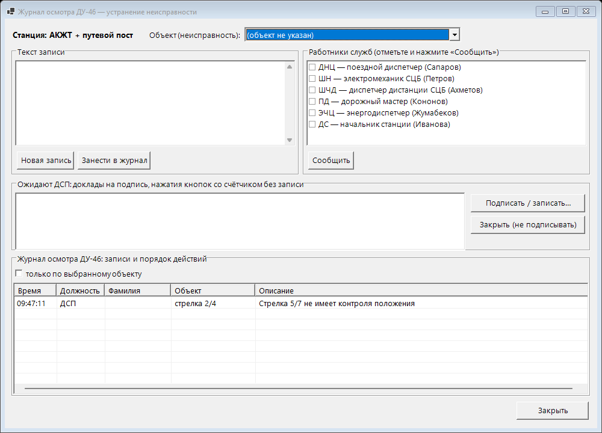
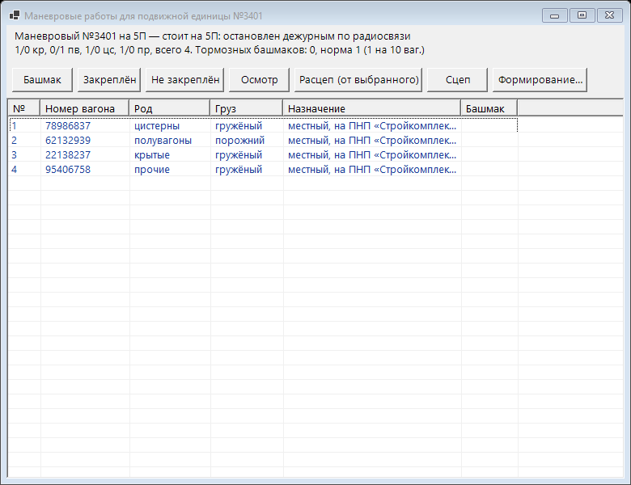
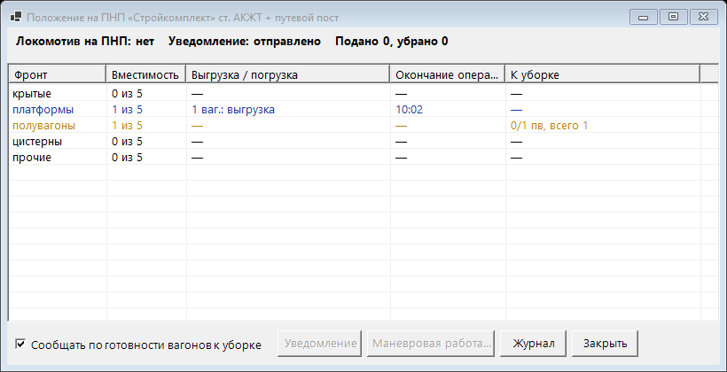

Инструкция студента
Тренажёр дежурного по станции (ДСП): станции АКЖТ, путевой пост, Алгабас. Для тех, кто работает за пультом станции.
1. Начало работы
- Запустите программу своей станции:
АКЖТ\Station.exe(станция АКЖТ и путевой пост) илиАлгабас\Algabas.exe. Какую — скажет преподаватель. - Нажмите Связь…, впишите адрес компьютера преподавателя (он написан у преподавателя вверху окна, например
192.168.8.27) и нажмите Подключить. Адрес запоминается — в следующий раз вводить не нужно. - Над пультом появится тёмная полоса занятия. Нажмите Вход, выберите себя в списке и введите пароль, если он есть. Если вас нет в списке — Меня нет в списке… (если преподаватель разрешил регистрацию).
- Когда преподаватель начнёт урок, на полосе появится его название и игровое время. Кнопка Задание — что нужно сделать на уроке и какие нарушения уже есть.
- Пока преподаватель держит время на паузе, пульт команды не принимает.
2. Окно станции

- Верхняя полоса: состояние макета (Arduino), Связь…, Вид (обе схемы / одна), Включить упрощённый (крупные светофоры), ДУ-46, Журналы ▾, Проверка, Убрать всё, язык, Выход.
- Схема: пути, стрелки (номера жёлтым), светофоры, поезда (синие ярлыки «№2002 →»). Под схемой — строка подсказки: она объясняет то, что под мышью.
- Занятость участков — таблица сбоку: красный — занят, жёлтый — замкнут в маршруте.
- Нижние колонки: «Стрелки», «Пульт ДСП», «Имитация» (поставить поезд, убрать поезда, скорость), список маршрутов с переключателем ПОЕЗДНЫЕ / МАНЕВРОВЫЕ.
- Режим интерфейса — кнопка Параметры вверху: Инженерный (всё, для наладки макета), Учебный (для занятий: без списка занятости и наладочных кнопок), Рабочий (как АРМ ДСП станции Медеу: крупная схема, часы, пульт ДСП полосой вверху, ПОЕЗДНЫЕ / МАНЕВРОВЫЕ внизу; без имитации и ручной занятости — для работы с макетом), Павлодарский (серая схема и кнопочный пульт «Енисей» под ней: кнопки светофоров начала и конца, стрелки «+ № −», кнопки путей — путь назначения или ИР). В том же окне галочками можно показать или скрыть любую панель; выбор запоминается.
- ИИ-помощник — кнопка ИИ вверху (окно открывается только этой кнопкой). Спросите по-русски или қазақша: «как задать маршрут», «маршрут Н на путь 3» (ответ — по шагам: что нажать, какие стрелки переведутся, какие участки должны быть свободны и можно ли задать его сейчас), «для чего светофор Н1», «что такое автоблокировка». Наведите мышь на светофор и спросите «что это?». Когда программа отказывает (красная строка в журнале), подсказка появляется в окне ИИ сама, а на кнопке загорается «ИИ ●».
3. Маршруты и сигналы
- Задать маршрут: выберите режим ПОЕЗДНЫЕ или МАНЕВРОВЫЕ, щёлкните ЛКМ по светофору начала, затем по светофору конца или по пути назначения. Маршрут мигает, пока устанавливается (стрелки переводятся), и горит ровно, когда светофор открыт. То же — клик по маршруту в списке.
- Отмена набора — если щёлкнули не тот светофор начала.
- Отменить маршрут: ПКМ по светофору → «Отменить…», или кнопка Отменить маршрут (последний заданный). Если светофор уже открывался, отмена идёт с выдержкой времени — горят лампы ОС (6 с), ОП (поездной при занятом приближении, 3 мин), ОМ (маневровый, 1 мин).
- Пригласительный сигнал: ПКМ по входному → «Пригласительный сигнал…». Применяется, когда обычный сигнал открыть нельзя (например, ложная занятость). Каждое нажатие — в журнал ДУ-46 (кнопка со счётчиком).
- Направление перегона: кнопка «Сменить направление» в колонке «Стрелки». Если перегон занят ложно — «Вспом. смена…» (ВСН, кнопка со счётчиком). Соседняя станция должна согласиться.
4. Стрелки
- Перевести: ЛКМ по номеру стрелки на схеме или кнопка в колонке «Стрелки». Стрелка в маршруте или на занятом участке не переводится.
- Вспомогательный перевод (ВК) — только при ложной занятости стрелочного участка: ПКМ по стрелке → «Вспомогательный перевод…». Записать в ДУ-46.
- ПКМ по стрелке: «Установить / удалить красный колпачок» (стрелка не переводится с пульта), «Управление стрелкой» (курбельная заслонка, перевод курбелем, закладка и замок, типовая скоба), «Выключение из централизации…», «Установить на макет», «Информация…» (как стрелка стоит на самом деле).
- Пометки у номера: К — колпачок, З — заслонка, Л — замок / скоба, В — выключена, М — на макете. «ВЗРЕЗ» — стрелку взрезал поезд.
- Контроль положения всех стрелок: держите кнопку «Контроль стрелок» или нажмите обе кнопки мыши на схеме: плюс — зелёным, минус — жёлтым.
5. Пульт ДСП
| Кнопка / лампа | Что делает |
|---|---|
| ЧЗС, НЗС, ЗС | Замыкание чётных, нечётных, всех стрелок. ЛКМ — нажать, ПКМ — отжать. Кнопка со счётчиком. |
| АДЧ, АДН | Автодействие по главному пути: маршрут после проследования поезда задаётся снова. Счётчик (срыв пломбы). |
| ИР… | Искусственная разделка секций, которые не разомкнулись за поездом. Выдержка, счётчик. |
| ОС, ОП, ОМ | Лампы выдержки отмены маршрута (с секундами). |
| Взрез, Откл. звонка | Лампа взреза стрелки и отключение звонка. |
| Ключ-жезл | Изъять, выдать машинисту, забрать, вложить. Пока ключ изъят — направление перегона не меняется. |
| ЗП, Извещение, Отмена изв., Закрытие | Переезд у путевого поста: лампа ЗП (белая — открыт, мигает — закрывается, красная — закрыт). |
| Лок., Уборка, ПНП ▾ | Путь необщего пользования: локомотив на ПНП, вагоны к уборке, меню ПНП (см. раздел 11). |
| Раздельное управление | Как на пульте «Енисей»: сначала стрелки, потом сигнал. |
6. Поезда и радиосвязь
Наведите мышь на поезд — в подсказке номер, категория, куда едет и почему стоит. ПКМ по поезду:
- Номер и индекс… — номер (чётный — в чётном направлении →, нечётный — в нечётном ←), индекс, категория, длинносоставный, тяжеловесный, негабаритный.
- Вызвать по радиосвязи… — окно «Поезд №…» (ниже).
- Предупреждение на поезд…, Вручить бланк…, Маневровая работа…, Натурный лист…, Вызвать восстановительный поезд… (при сходе).
- Развернуть, сделать маневровым / поездным.

| Команда | Что делает машинист |
|---|---|
| Остановка / Продолжить движение | Останавливается и стоит до команды «Продолжить». |
| Указание… | Регистрируемый приказ: проследовать один запрещающий светофор. Приказ сам записывается в ДУ-58. Перед этим убедитесь, что маршрут приготовлен и стрелки заперты. |
| Осаживание | Осаживает состав на один участок назад и ждёт указаний. |
| Ремонт | При неисправности двигателя бригада ремонтирует локомотив (4–8 мин) и докладывает. |
| Сократить стоянку | Пассажирский может уйти раньше времени по расписанию. |
| Предупреждение… | Скорость на этот поезд и сообщить машинисту действующие предупреждения. |
| Где находитесь? | Машинист сообщает станцию, участок и почему стоит. |
| Маневровая работа…, Натурный лист…, Восст. поезд… | См. разделы 11 и 12. |
Настоящий поезд на макете номера не имеет: ПКМ по занятому участку → «Номер поезда на макете…». Номер сам переходит за поездом по участкам. Радиосвязь и бланки с ним только записываются — поезд ведут руками.
7. Журналы
Кнопка Журналы ▾: ДУ-2, ДУ-47, ДУ-58, ДУ-60, бланки, радиосвязь, предупреждения, ДУ-46. В каждом журнале слева — записи, справа — форма. Новая запись → заполнить → Сохранить. Чтобы исправить — выберите запись, измените, «Сохранить» (исправление помечается временем). Удалять записи нельзя.

| Журнал | Что записывать |
|---|---|
| ДУ-2 — движение поездов | Каждый поезд: номер, индекс, путь, прибытие, отправление (или проследование), отметки «ПС» (по пригласительному), «ПР» (по письменному разрешению). В конце урока программа сверит с фактом: номер, путь, время ±2 мин. |
| ДУ-47 — телефонограммы | Исходящие телефонограммы соседней станции. «Сохранить / передать» — сосед отвечает входящей (согласие на поезд, перегон свободен / занят). Готовые заготовки текста — в списке. |
| ДУ-58 — распоряжения | Приказы поездного диспетчера (ДНЦ) — номер, время, текст. Приказ ДНЦ приходит всплывающим окном — запишите его. Ваш приказ «Указание» по радиосвязи записывается сам. |
| ДУ-60 — предупреждения | Каждое выданное предупреждение: место, скорость, начало, окончание. «По выданному предупреждению…» заполнит форму, «Отменить выделенное» — отмена. |
| ДУ-46 — осмотр | Неисправности и нажатия кнопок со счётчиком (см. раздел 10). |
8. Бланки
Журналы ▾ → «Бланки…» (или ПКМ по поезду → «Вручить бланк…»): выберите вид → Создать бланк → заполнить → «Сохранить» → выбрать поезд → Вручить машинисту. Вручённый бланк изменить нельзя.

| Бланк | Когда | Что делает поезд |
|---|---|---|
| ДУ-50 путевая записка | Телефонные средства связи. Сначала — согласие соседа (ДУ-47) | Проезжает закрытый выходной, по перегону идёт не по сигналам автоблокировки |
| ДУ-52 | Полуавтоблокировка, выходной не открывается | Проезжает закрытый выходной |
| ДУ-54 | Автоблокировка, выходной не открывается | Проезжает закрытый выходной, дальше по сигналам автоблокировки |
| ДУ-55, ДУ-56 | Перерыв всех средств сигнализации и связи | ДУ-56 — как ДУ-50; ДУ-55 — извещение соседу |
| ДУ-61 предупреждение | На участке действуют предупреждения | Машинист предупреждён (кнопка «Вписать действующие предупреждения») |
| ДУ-64 особые условия | Хозяйственные, восстановительные поезда, помощь | Проезжает закрытый выходной, по перегону — не по сигналам автоблокировки |
9. Предупреждения и «окна»
ПКМ по участку или перегону → «Предупреждение / окно…»: участок или весь перегон, километр, скорость для пассажирских и грузовых, до отмены или до времени. Галочка «Ввести данные для окна» — путь закрыт для работ (служба пути, СЦБ, энергохозяйства).

- На схеме предупреждение — оранжевый пунктир под участком, «окно» — красный крест.
- Под предупреждением поезд едет медленнее. В «окно» маршрут не задаётся и поезд не вступает (кроме хозяйственного и восстановительного).
- Выданное предупреждение запишите в ДУ-60. Машинистам поездов, которые пойдут по этому участку, вручите ДУ-61 (или передайте по радиосвязи «Предупреждение…»).
- «Окно» на перегоне даёт поездной диспетчер приказом — запишите номер приказа в ДУ-58 (и приказ об открытии после отмены).
- Отменить: ПКМ по участку → «Отменить: …» или «Журналы ▾» → «Предупреждения и «окна»…».
10. Неисправности (журнал ДУ-46)
Неисправности задаёт преподаватель. Надписей «неисправность» нет — вы видите то, что видел бы ДСП: стрелка без контроля, светофор не открывается, участок занят без поезда. Об отказе поезда сообщает машинист.
- ПКМ по объекту → «Неисправность… (журнал ДУ-46)» или кнопка ДУ-46.
- Напишите запись → Занести в журнал.
- Отметьте работников (ШН — электромеханик, ДНЦ — диспетчер, ПД — дорожный мастер при сходе) → Сообщить.
- Работник приедет (2–5 игровых минут) и пришлёт доклад. Нажмите Подписать — неисправность устранена.

11. Маневровая работа и ПНП
Грузовой поезд везёт вагоны (натурный лист). В голове, за локомотивом, — местные вагоны на путь необщего пользования (ПНП) станции: у АКЖТ — «Стройкомплект» (тупик 6), у Алгабаса — «Нефтебаза» (тупик М6Т).

- Примите поезд, остановите его (радиосвязь «Остановка»). ПКМ по поезду → «Расформировать, маневровая работа…» — поезд станет маневровым составом.
- Выберите первый транзитный вагон → Расцеп. Транзитные вагоны останутся на пути без локомотива (ярлык «ваг. N»).
- Сразу закрепите их: выберите вагоны → Башмак. Норма — 1 тормозной башмак на 10 вагонов. Доложите Закреплён. Не закреплены по норме 2 минуты — критическое событие.
- Меню ПНП ▾ на пульте → «Уведомление о маневровой работе».
- Задайте маневровый маршрут в тупик ПНП. Когда локомотив заедет — «ПНП ▾» → «Маневровая работа на ПНП…»: отметьте вагоны «К подаче» → Выполнить маневровую работу.
- Вагоны встанут на грузовые фронты (5 фронтов по роду вагонов, по 5 вагонов). Составитель спросит «Разрешаете выезд на станцию?» — «Подписать» = да.
- Погрузка / выгрузка идёт по времени. Когда загорится жёлтая лампа «Уборка» — снова заезд, «К уборке» → выполнить.
- Вернитесь к вагонам на пути, подъедьте вплотную (поезд остановится с надписью «можно сцепить») — изымите башмаки (Башмак) и нажмите Сцеп.
- Формирование… — номер и индекс, состав снова поезд. Осмотр — осмотрщик ПТО проверит за 3–6 минут. Отправьте поезд.

12. Сход и восстановительный поезд
- Машинист сообщает о сходе. Запишите в ДУ-46, сообщите ДНЦ и ПД.
- ПД приедет и сообщит, что нужен восстановительный поезд. ПКМ по сошедшему поезду → «Вызвать восстановительный поезд…» → «Вызов».
- Через несколько минут поезд №8002 появится на подходе к станции. Примите его и подведите маршрутами вплотную к месту схода.
- Начальник восстановительного поезда (НВП) доложит о прибытии, затем — о ликвидации схода: поезду скорость не более 40 км/ч.
- Выдайте поезду предупреждение 40 км/ч (радиосвязь → «Предупреждение…»), потом отправляйте.
13. Расписание
На уроке с расписанием поезда появляются сами, с номерами. Кнопка Расписание на полосе занятия — таблица поездов, факт, печать. Принимайте на пути по расписанию (ТРА). Пассажирские не уходят раньше времени. Опоздание отправления по вине станции больше 5 минут — критическое событие.
14. Оценка
100 баллов минус штрафы. Зачёт — баллов не меньше порога урока и критических событий не больше допустимого. За невыполненное задание (принять / отправить) — −10 за каждый поезд.
| Нарушение | Штраф |
|---|---|
| Поезд стоит у закрытого входного больше 3 минут | критическое, −20 |
| Взрез стрелки поездом | критическое, −20 |
| Опоздание отправления по расписанию больше 5 минут | критическое, −20 |
| Вагоны без локомотива не закреплены по норме 2 минуты | критическое, −20 |
| Второй локомотив на ПНП | критическое, −20 |
| Невозможный маршрут (попытка) | −2 (всего не больше −20) |
| Отмена маршрута при поезде на приближении | −5 (не больше −20) |
| Неисправность не записана в ДУ-46 / не сообщено ШН / ДНЦ / ПД | −5 за каждое |
| Кнопка со счётчиком не записана в ДУ-46 за 10 минут | −5 (не больше −20) |
| Журнал ДУ-2 не совпадает с фактом / приказ ДНЦ не в ДУ-58 / предупреждение не в ДУ-60 | −2 (по журналу не больше −10) |
| ДУ-50 вручена без согласия соседа (ДУ-47) | −5 |
| Бланк вручён не тому поезду | −2 |
| Поезд вступил под предупреждение без ДУ-61 / радиосвязи | −5 |
| Пропуск по приказу или бланку, когда стрелки не замкнуты | −5 |
| Доклад «закреплён» при нехватке башмаков; движение с башмаком; поезд без осмотра ПТО | −5 |
| Заезд на ПНП поездом; подача на ПНП без уведомления | −5 |
| План маневров (подать / убрать / отправить местных) не выполнен | −2 за вагон (не больше −20) |
| Поезд после схода отправлен без предупреждения 40 км/ч | −5 |
15. Частые вопросы
- Маршрут не задаётся.
- Прочитайте строку внизу окна и журнал справа: там причина (участок занят, стрелка не переводится, направление перегона, «окно»…).
- Поезд стоит.
- Наведите на него мышь — в подсказке причина («стоит у светофора…», «стрелка без контроля», «впереди окно», «остановлен по радиосвязи»).
- Нет полосы занятия.
- Нет связи с преподавателем: проверьте «Связь…» и адрес.
- Пульт не реагирует.
- Время на паузе или управление забрал преподаватель (надпись на полосе).